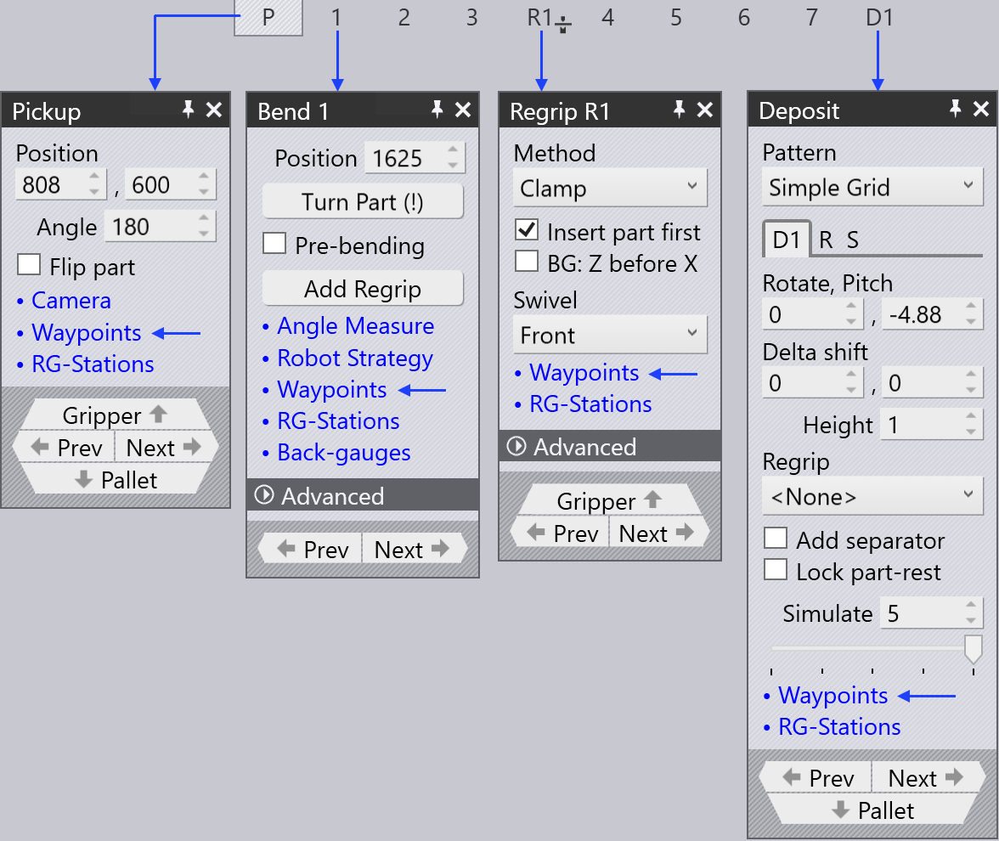
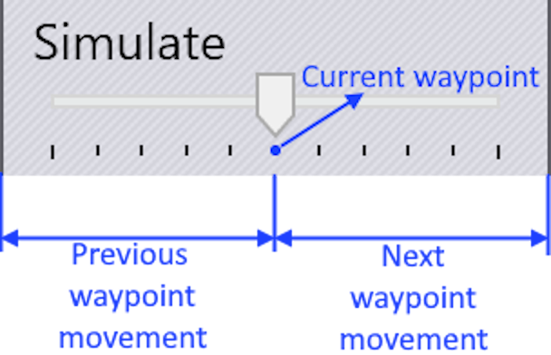

Wegpunkte
Überblick
Jede Bewegung des BendMasters besteht aus Wegpunkten, die nacheinander durchlaufen werden. Alle Wegpunkte einer Bewegung werden von TecZone bestimmt, aber die meisten von ihnen können angepasst werden. Punkte, die direkt mit der Nachführung während des Biegeprozesses zusammenhängen, können nicht geändert werden. Verschiedene Einstellungen zur Steuerung der Wegpunkte sind unten aufgeführt:
-
Position eines Wegpunkts ändern
-
Neuen Wegpunkt einfügen oder vorhandenen Wegpunkt entfernen
-
Bewegungseigenschaften wie Geschwindigkeit und Interpolation anpassen
-
Neuen Wegpunkt an gewünschter Position hinzufügen
So greifen Sie auf das Panel Wegpunkte zu:
-
Klicken Sie direkt auf die Roboterschiene
-
Klicken Sie auf den Link Wegpunkte im Panel Aufnahme, Biegen, Umgreifen oder Ablage.
-
Klicken Sie auf den Wegpunkte-Link in einem der RG-Stations-Panels



Panel Wegpunkte

Ein typisches Wegpunkte-Panel ist daneben dargestellt:
-
Der Phase-Schieberegler zeigt die schrittweise Bewegung eines Wegpunkts. Jede Phase spiegelt eine bestimmte Roboter operation wie Aufnahme, Biegen, Umgreifen und Ablage wider.
-
Verwenden Sie die Option Anzeige, um anzuzeigen:
-
Greifpunkt
-
Handgelenkpunkt
-
Roboterachsen.
-
-
Die Position und der Winkel des Handgelenks oder Greifers werden angezeigt und können bearbeitet werden. Wenn die Roboterachsen ausgewählt sind, werden die Roboterachsenwerte angezeigt und können bearbeitet werden.
-
Die gelbe Spur zeigt den Pfad vom vorherigen Schritt zu diesem und von diesem Schritt zum nächsten (siehe Bild unten). Die 3 kleinen Dreiecke zeigen die lokalen X- und Y-Koordinaten des Roboters (Handgelenk oder Greifer) an.
-
Der Simulieren-Schieberegler wird verwendet, um die Simulation von der vorherigen Phase zur nächsten Phase zu bewegen. Wenn dieser in der Mitte ist, ist das die tatsächliche Phase, die wir bearbeiten.
-
Die Einstellung Interpolieren wird verwendet, um zwischen linearer und achsenorientierter Interpolation umzuschalten.
-
Die Einstellungen Geschwindigkeit und Rundung werden verwendet, um die Geschwindigkeits- und Genauigkeitseinstellung für diesen Schritt zu bearbeiten.
-
Das Feld Umgreif-Stationen wird verwendet, um die Position der Umgreif-Stationen entlang ihrer Achse zu ändern.
-
Die Option Einfügen wird verwendet, um neue Wegpunkte durch Eingabe neuer Werte zu erstellen. Neu hinzugefügte Wegpunkte können durch die Option Entfernen entfernt werden.
-
Verwenden Sie die Schaltflächen Zurück und Weiter, um zum nächsten oder vorherigen Schritt zu gehen (oder Sie können auch die linke und rechte Pfeiltaste verwenden). Durch Klicken auf die Schaltfläche Weiter wird jeder Schritt in einer Phase angezeigt. Am Ende der Phase wird das nächste entsprechende Wegpunkt-Panel angezeigt.
Eigenschaften von Wegpunkten
Abhängig vom Prozesszustand erhält jeder Wegpunkt eine Reihe von Attributen bezüglich der Art der Interpolation, der Geschwindigkeit und der Bewegungspräzision. Bei Bedarf können diese Attribute geändert werden.
Diese Einstellungen werden im Abschnitt Erweitert des Wegpunkt-Panels gesteuert.
| Interpolieren Typ | Beschreibung |
|---|---|
Linear |
Lineare Bewegung des TCP entlang eines Pfades |
Achse |
Die Bewegung von der Startposition zur Endposition ist so schnell
wie möglich, unabhängig vom Pfad. |
| Geschwindigkeit Typ | Beschreibung |
|---|---|
Max. |
Maximale Geschwindigkeit |
Schnell |
75 % der Maximalgeschwindigkeit |
Mittel |
50 % der Maximalgeschwindigkeit |
Reduziert |
30 % der Maximalgeschwindigkeit |
Langsam |
20 % der Maximalgeschwindigkeit |
| Rundung Typ | Beschreibung |
|---|---|
Max. |
Rundung beginnt bei 50 % der kürzeren Pfadlänge |
Groß |
Rundung beginnt bei 35 % der kürzeren Pfadlänge |
Mittel |
Rundung beginnt bei 20 % der kürzeren Pfadlänge |
Reduziert |
Rundung beginnt bei 10 % der kürzeren Pfadlänge |
Fein |
Rundung beginnt bei 5 % der kürzeren Pfadlänge |
Exakt |
Der Kalibrierungspunkt wird exakt ohne Überlagerung angefahren |

-
Pfadlänge zwischen dem Wegpunkt und dem Endpunkt
-
Ausgeführte Länge
-
Pfadlänge zwischen dem Startpunkt und dem Wegpunkt
-
Wegpunkt 3 (Endpunkt)
-
Wegpunkt 2 (Rundungspunkt)
-
Wegpunkt 1 (Startpunkt)
Wegpunkte anzeigen
Wenn ein Biegeteil gewerkzeugt ist, werden alle Wegpunkte automatisch für jede Bewegungsphase berechnet. Diese Punkte können phasenweise mit einer entsprechenden Beschreibung simuliert werden.

Die folgenden Bilder zeigen die Wegpunktphasen der ersten Biegeoperation (in Seitenansicht):

Wegpunkte ändern
Die Position eines Wegpunkts kann bei Bedarf geändert werden, zum Beispiel um zu verhindern, dass über die Achse gefahren wird.
Neben anderen Aspekten zur Kollisionsvermeidung können unerwünschte Wegpunkte eliminiert oder neue Wegpunkte hinzugefügt werden.
-
Wenn die Position eines vorhandenen Wegpunkts geändert wird, zeigt TecZone eine Warnmeldung an. Klicken Sie auf OK, um mit der Änderung des Wegpunkts fortzufahren.

-
Durch Klicken auf die Schaltfläche Einfügen werden neue Wegpunkte hinzugefügt.


-
Neu hinzugefügte Wegpunkte werden im Phasennamen durch +1,+2 usw. gekennzeichnet, wie unten gezeigt:

Wegpunkte simulieren
Standardmäßig befindet sich der Schieberegler Simulieren in der Mittelposition. Die Bewegung des Roboters von einem Wegpunkt zum anderen wird nahtlos mit diesem Schieberegler simuliert.
